This function is borrowed from ggmanh::manhattan_plot() with following customizations:
Usage
ManhattanPlot(
data,
chr_by,
pos_by,
pval_by,
split_by = NULL,
split_by_sep = "_",
label_by = NULL,
chromosomes = NULL,
pt_size = 0.75,
pt_color = NULL,
pt_alpha = alpha,
pt_shape = 19,
label_size = 3,
label_fg = NULL,
highlight = NULL,
highlight_color = NULL,
highlight_size = 1.5,
highlight_alpha = 1,
highlight_shape = 19,
preserve_position = TRUE,
chr_gap_scaling = 1,
pval_transform = "-log10",
signif = c(5e-08, 1e-05),
signif_color = NULL,
signif_rel_pos = 0.2,
signif_label = TRUE,
signif_label_size = 3.5,
signif_label_pos = c("left", "right"),
thin = NULL,
thin_n = 1000,
thin_bins = 200,
rescale = TRUE,
rescale_ratio_threshold = 5,
palette = "Dark2",
palcolor = NULL,
palreverse = FALSE,
alpha = 1,
theme = "theme_this",
theme_args = list(),
title = NULL,
subtitle = NULL,
xlab = NULL,
ylab = expression("-" * log[10](p)),
seed = 8525,
combine = TRUE,
nrow = NULL,
ncol = NULL,
byrow = TRUE,
axes = NULL,
axis_titles = axes,
guides = NULL,
facet_by = NULL,
design = NULL,
...
)Arguments
- data
A data frame.
- chr_by
Column name for chromosome (default: "chr").
- pos_by
Column name for position (default: "pos").
- pval_by
Column name for p-value (default: "pval").
- split_by
The column(s) to split data by and plot separately.
- split_by_sep
The separator for multiple split_by columns. See
split_by- label_by
Column name for the variants to be labeled (default: NULL). Only the variants with values in this column will be labeled.
- chromosomes
A vector of chromosomes to be plotted (default: NULL). If NULL, all chromosomes will be plotted. It is more of a combination of the
chromosomeandchr.orderarguments ofggmanh::manhattan_plot(). We can use it to select chromosomes to be plotted or to set the order of the chromosomes.- pt_size
A numeric value to specify the size of the points in the plot.
- pt_color
A character string to specify the color of the points in the plot. By default, the color of the points will be controled by
paletteorpalcolorarguments. This is useful to color the background points whenhighlightandhighlight_colorare specified.- pt_alpha
A numeric value to specify the transparency of the points in the plot.
- pt_shape
A numeric value to specify the shape of the points in the plot.
- label_size
A numeric value to specify the size of the labels in the plot.
- label_fg
A character string to specify the color of the labels in the plot. If NULL, the color of the labels will be the same as the points.
- highlight
Either a vector of indices or a character of expression to select the variants to be highlighted (default: NULL). If NULL, no variants will be highlighted.
- highlight_color
A character string to specify the color of the highlighted points.
- highlight_size
A numeric value to specify the size of the highlighted points.
- highlight_alpha
A numeric value to specify the transparency of the highlighted points.
- highlight_shape
A numeric value to specify the shape of the highlighted points.
- preserve_position
If TRUE, the width of each chromosome reflect the number of variants and the position of each variant is correctly scaled? If FALSE, the width of each chromosome is equal and the variants are equally spaced.
- chr_gap_scaling
A numeric value to specify the scaling of the gap between chromosomes. It is used to adjust the gap between chromosomes in the plot.
- pval_transform
A function to transform the p-values (default: -log10). If it is a character, it will be evaluated as a function.
- signif
A vector of significance thresholds (default: c(5e-08, 1e-05)).
- signif_color
A character vector of equal length as signif. It contains colors for the lines drawn at signif. If NULL, the smallest value is colored black while others are grey.
- signif_rel_pos
A numeric between 0.1 and 0.9. If the plot is rescaled,
- signif_label
A logical value indicating whether to label the significance thresholds (default: TRUE).
- signif_label_size
A numeric value to specify the size of the significance labels.
- signif_label_pos
A character string specifying the position of the significance labels. where should the significance threshold be positioned? It can be either "left" or "right" (default: "left").
- thin
A logical value indicating whether to thin the data (default: NULL). Defaults to TRUE when
chromosomesis specified and the length of it is less than the number of chromosomes in the data. Defaults to FALSE otherwise.- thin_n
Number of max points per horizontal partitions of the plot. Defaults to 1000.
- thin_bins
Number of bins to partition the data. Defaults to 200.
- rescale
A logical value indicating whether to rescale the plot (default: TRUE).
- rescale_ratio_threshold
A numeric value to specify the ratio threshold for rescaling.
- palette
A character string specifying the palette to use. A named list or vector can be used to specify the palettes for different
split_byvalues.- palcolor
A character string specifying the color to use in the palette. A named list can be used to specify the colors for different
split_byvalues. If some values are missing, the values from the palette will be used (palcolor will be NULL for those values).- palreverse
A logical value indicating whether to reverse the palette for chromosomes (default: FALSE).
- alpha
A numeric value specifying the transparency of the plot.
- theme
A character string or a theme class (i.e. ggplot2::theme_classic) specifying the theme to use. Default is "theme_this".
- theme_args
A list of arguments to pass to the theme function.
- title
A character string specifying the title of the plot. A function can be used to generate the title based on the default title. This is useful when split_by is used and the title needs to be dynamic.
- subtitle
A character string specifying the subtitle of the plot.
- xlab
A character string specifying the x-axis label.
- ylab
A character string specifying the y-axis label.
- seed
The random seed to use. Default is 8525.
- combine
Whether to combine the plots into one when facet is FALSE. Default is TRUE.
- nrow
A numeric value specifying the number of rows in the facet.
- ncol
A numeric value specifying the number of columns in the facet.
- byrow
A logical value indicating whether to fill the plots by row.
- axes
A string specifying how axes should be treated. Passed to
patchwork::wrap_plots(). Only relevant whensplit_byis used andcombineis TRUE. Options are:'keep' will retain all axes in individual plots.
'collect' will remove duplicated axes when placed in the same run of rows or columns of the layout.
'collect_x' and 'collect_y' will remove duplicated x-axes in the columns or duplicated y-axes in the rows respectively.
- axis_titles
A string specifying how axis titltes should be treated. Passed to
patchwork::wrap_plots(). Only relevant whensplit_byis used andcombineis TRUE. Options are:'keep' will retain all axis titles in individual plots.
'collect' will remove duplicated titles in one direction and merge titles in the opposite direction.
'collect_x' and 'collect_y' control this for x-axis titles and y-axis titles respectively.
- guides
A string specifying how guides should be treated in the layout. Passed to
patchwork::wrap_plots(). Only relevant whensplit_byis used andcombineis TRUE. Options are:'collect' will collect guides below to the given nesting level, removing duplicates.
'keep' will stop collection at this level and let guides be placed alongside their plot.
'auto' will allow guides to be collected if a upper level tries, but place them alongside the plot if not.
- facet_by
A character string specifying the column name of the data frame to facet the plot. Otherwise, the data will be split by
split_byand generate multiple plots and combine them into one usingpatchwork::wrap_plots- design
Specification of the location of areas in the layout, passed to
patchwork::wrap_plots(). Only relevant whensplit_byis used andcombineis TRUE. When specified,nrow,ncol, andbyroware ignored. Seepatchwork::wrap_plots()for more details.- ...
Additional arguments.
Value
A ggplot object or wrap_plots object or a list of ggplot objects.
If no split_by is provided, a single plot (ggplot object) will be returned.
If 'combine' is TRUE, a wrap_plots object will be returned.
If 'combine' is FALSE, a list of ggplot objects will be returned.
Details
The dots in argument names are replaced with underscores wherever possible.
chr.colname,pos.colname,pval.colnameandlabel.colnameare replaced withchr_by,pos_by,pval_byandlabel_byrespectively.The
chromosomeandchr.orderarguments are merged into a single argumentchromosomes.The
highlight.colnameargument is replaced withhighlight, which can be a vector of indices or a character of expression to select the variants to be highlighted, instead of a column name.point.sizeis replaced withpt_sizeWhen
highlightis specified, the colors of the points will be controled bypt_colorandhighlight_colorarguments.The labels get more controled by
label_*arguments.The highlighted points get more controled by
highlight_*arguments.The
pval_log_transformargument is replaced withpval_transform, which allows to specify a function to transform the p-values.
Examples
# \donttest{
set.seed(1000)
nsim <- 50000
simdata <- data.frame(
"chromosome" = sample(c(1:22,"X"), size = nsim, replace = TRUE),
"position" = sample(1:100000000, size = nsim),
"P.value" = rbeta(nsim, shape1 = 5, shape2 = 1)^7,
"cohort" = sample(c("A", "B"), size = nsim, replace = TRUE)
)
simdata$chromosome <- factor(simdata$chromosome, c(1:22, "X"))
options(repr.plot.width=10, repr.plot.height=5)
if (requireNamespace("ggmanh", quietly = TRUE)) {
ManhattanPlot(
simdata, pval_by = "P.value", chr_by = "chromosome", pos_by = "position",
title = "Simulated P.Values", ylab = "P")
}
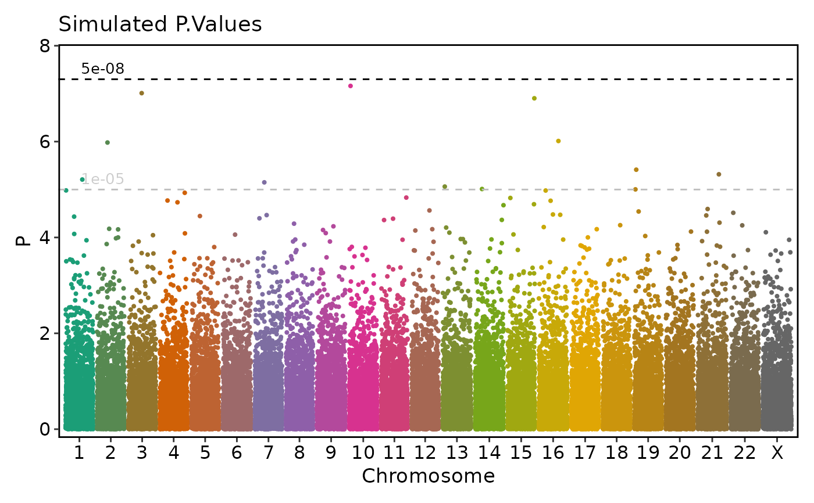
if (requireNamespace("ggmanh", quietly = TRUE)) {
# split_by
ManhattanPlot(
simdata, pval_by = "P.value", chr_by = "chromosome", pos_by = "position",
title = "Simulated P.Values", ylab = "P", split_by = "cohort", ncol = 1)
}
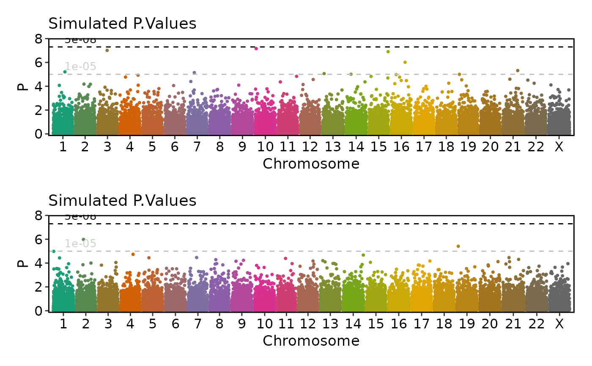
if (requireNamespace("ggmanh", quietly = TRUE)) {
# Customized p-value transformation and significance threshold line colors
ManhattanPlot(
simdata, pval_by = "P.value", chr_by = "chromosome", pos_by = "position",
title = "Simulated -Log2 P.Values", ylab = "-log2(P)", pval_transform = "-log2",
signif_color = c("red", "blue"))
}
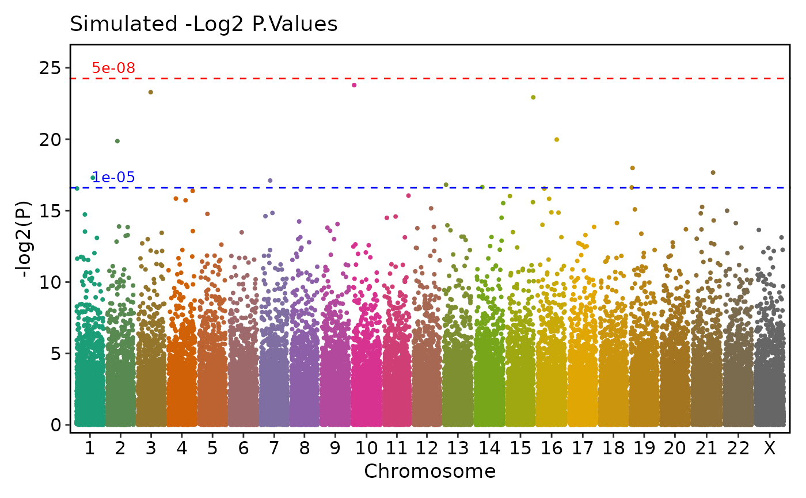
if (requireNamespace("ggmanh", quietly = TRUE)) {
# Use a different palette and don't show significance threshold labels
ManhattanPlot(
simdata, pval_by = "P.value", chr_by = "chromosome", pos_by = "position",
palette = "Set1", signif_label = FALSE)
}
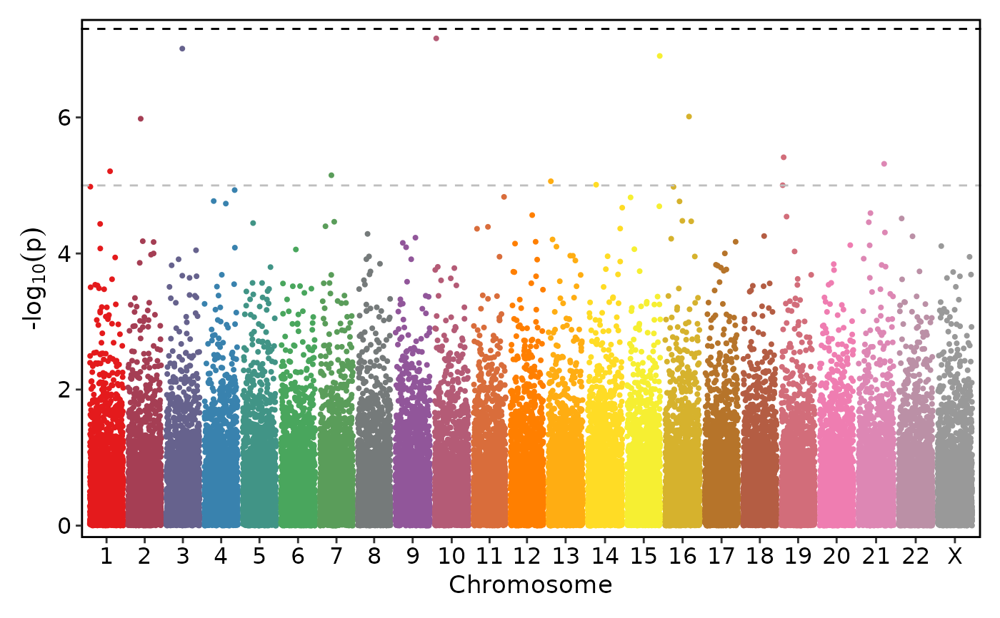
if (requireNamespace("ggmanh", quietly = TRUE)) {
# Reverse the palette and show significance threshold labels on the right
ManhattanPlot(
simdata, pval_by = "P.value", chr_by = "chromosome", pos_by = "position",
palette = "Set1", palreverse = TRUE, signif_label_pos = "right")
}
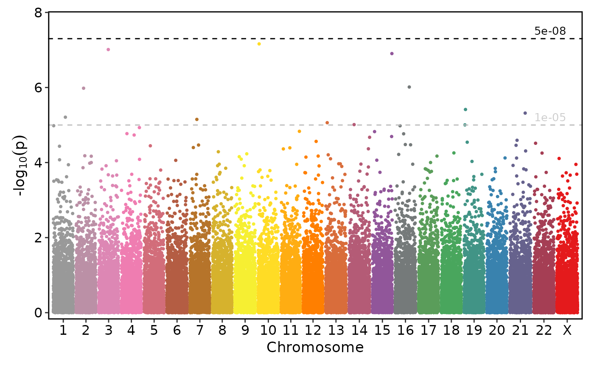
if (requireNamespace("ggmanh", quietly = TRUE)) {
# Use chromosomes to show a single selected chromosome
ManhattanPlot(
simdata, pval_by = "P.value", chr_by = "chromosome", pos_by = "position",
title = "Simulated P.Values", chromosomes = 5)
}
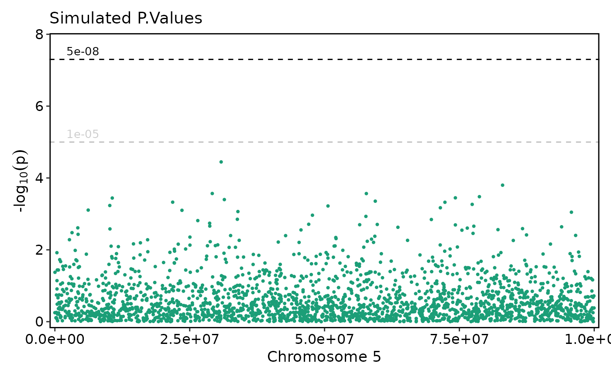
if (requireNamespace("ggmanh", quietly = TRUE)) {
# Subset and reorder chromosomes
ManhattanPlot(
simdata, pval_by = "P.value", chr_by = "chromosome", pos_by = "position",
title = "Simulated P.Values", chromosomes = c(20, 4, 6))
}
 tmpdata <- data.frame(
"chromosome" = c(rep(5, 10), rep(21, 5)),
"position" = c(sample(250000:250100, 10, replace = FALSE),
sample(590000:600000, 5, replace = FALSE)),
"P.value" = c(10^-(rnorm(10, 100, 3)), 10^-rnorm(5, 9, 1)),
"cohort" = c(rep("A", 10), rep("B", 5))
)
simdata <- rbind(simdata, tmpdata)
simdata$chromosome <- factor(simdata$chromosome, c(1:22, "X"))
if (requireNamespace("ggmanh", quietly = TRUE)) {
# Don't rescale the plot (y-axis)
ManhattanPlot(
simdata, pval_by = "P.value", chr_by = "chromosome", pos_by = "position",
title = "Simulated P.Values - Significant", rescale = FALSE)
}
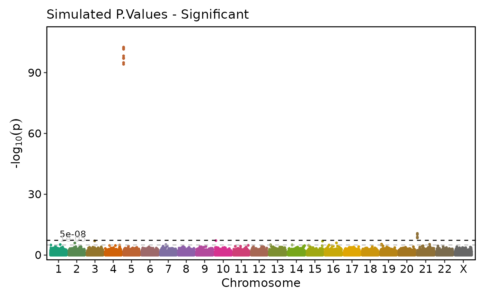
if (requireNamespace("ggmanh", quietly = TRUE)) {
# Rescale the plot (y-axis) and put the breaking point in the middle of the y-axis
ManhattanPlot(
simdata, pval_by = "P.value", chr_by = "chromosome", pos_by = "position",
title = "Simulated P.Values - Significant", rescale = TRUE, signif_rel_pos = 0.5)
}
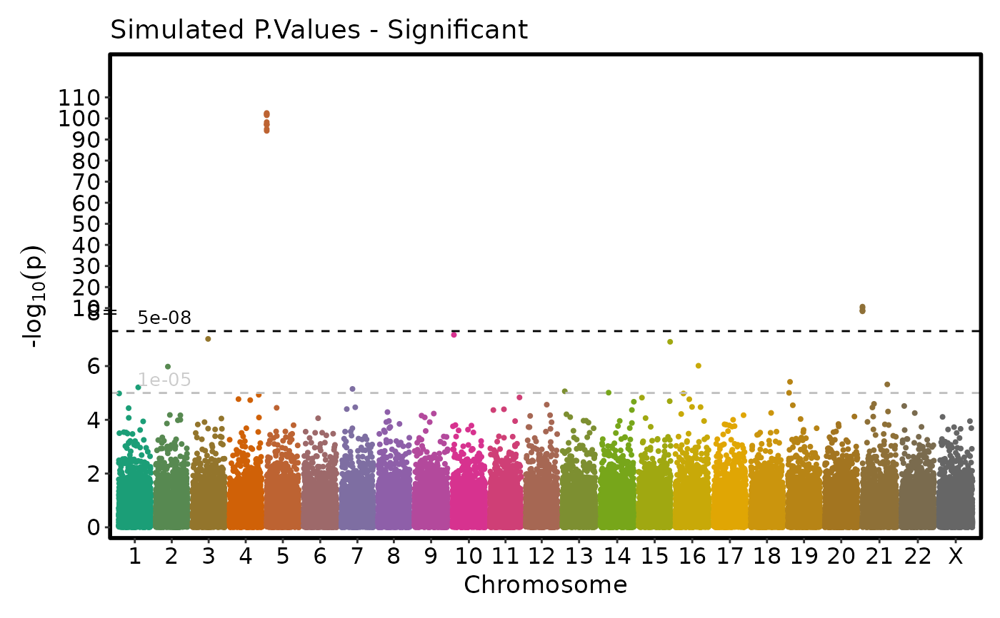
sig <- simdata$P.value < 5e-07
simdata$label <- ""
simdata$label[sig] <- sprintf("Label: %i", 1:sum(sig))
simdata$label2 <- ""
i <- (simdata$chromosome == 5) & (simdata$P.value < 5e-8)
simdata$label2[i] <- paste("Chromosome 5 label", 1:sum(i))
if (requireNamespace("ggmanh", quietly = TRUE)) {
# Label the points with labels
ManhattanPlot(simdata, label_by = "label", pval_by = "P.value", chr_by = "chromosome",
pos_by = "position", title = "Simulated P.Values with labels", label_size = 4)
}
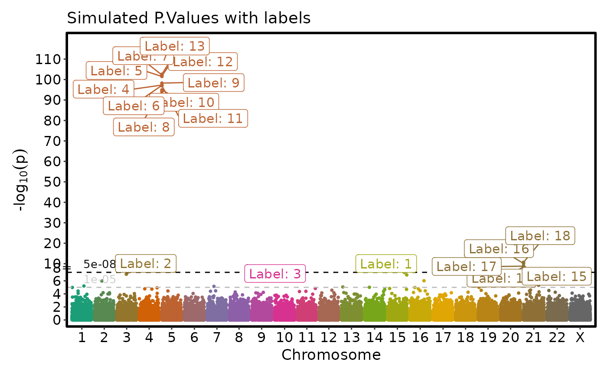
if (requireNamespace("ggmanh", quietly = TRUE)) {
# Label the points with labels and use a different color for the labels
ManhattanPlot(simdata, label_by = "label2", pval_by = "P.value", chr_by = "chromosome",
pos_by = "position", title = "Simulated P.Values with labels",
label_size = 3, label_fg = "black")
}
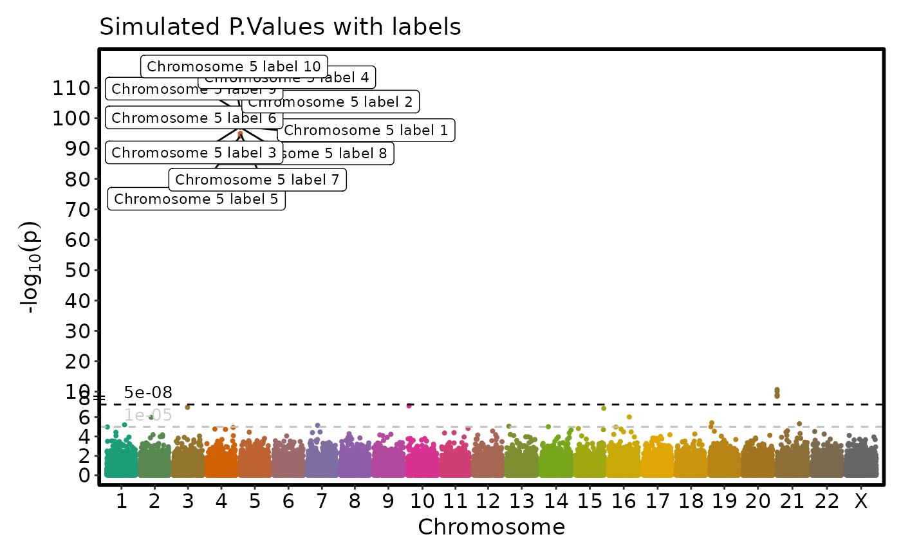
simdata$color <- "Not Significant"
simdata$color[simdata$P.value <= 5e-8] <- "Significant"
if (requireNamespace("ggmanh", quietly = TRUE)) {
# Highlight points with shapes
ManhattanPlot(simdata, title = "Highlight Points with shapes",
pval_by = "P.value", chr_by = "chromosome", pos_by = "position",
highlight = "color == 'Significant'", highlight_color = NULL, highlight_shape = 6,
highlight_size = 5, pt_alpha = 0.2, pt_size = 1)
}
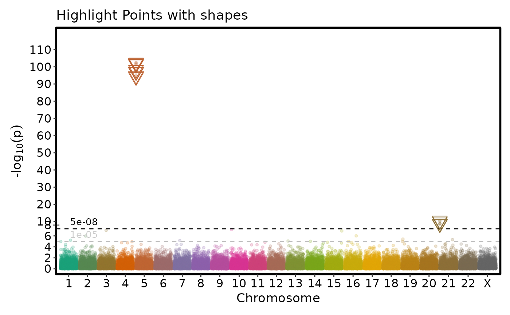
if (requireNamespace("ggmanh", quietly = TRUE)) {
# Highlight points with colors
ManhattanPlot(simdata, title = "Highlight Points",
pval_by = "P.value", chr_by = "chromosome", pos_by = "position",
highlight = "color == 'Significant'", highlight_color = "black",
pt_color = "lightblue", pt_alpha = 0.2, pt_size = 0.1)
}
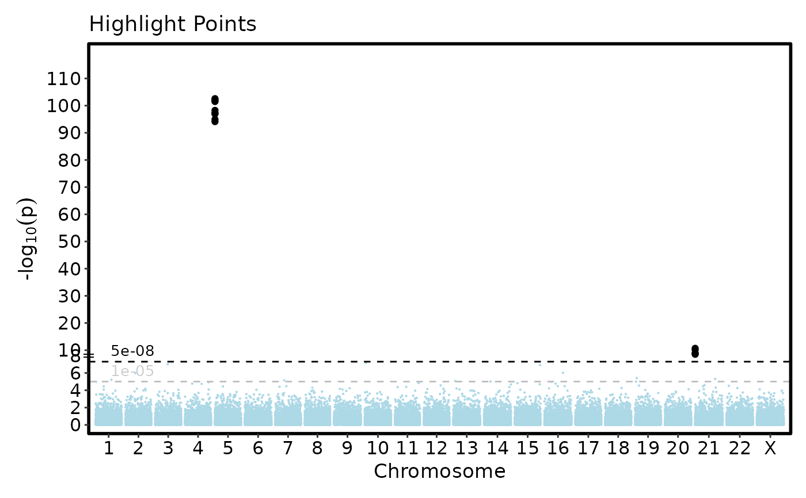
# }
tmpdata <- data.frame(
"chromosome" = c(rep(5, 10), rep(21, 5)),
"position" = c(sample(250000:250100, 10, replace = FALSE),
sample(590000:600000, 5, replace = FALSE)),
"P.value" = c(10^-(rnorm(10, 100, 3)), 10^-rnorm(5, 9, 1)),
"cohort" = c(rep("A", 10), rep("B", 5))
)
simdata <- rbind(simdata, tmpdata)
simdata$chromosome <- factor(simdata$chromosome, c(1:22, "X"))
if (requireNamespace("ggmanh", quietly = TRUE)) {
# Don't rescale the plot (y-axis)
ManhattanPlot(
simdata, pval_by = "P.value", chr_by = "chromosome", pos_by = "position",
title = "Simulated P.Values - Significant", rescale = FALSE)
}
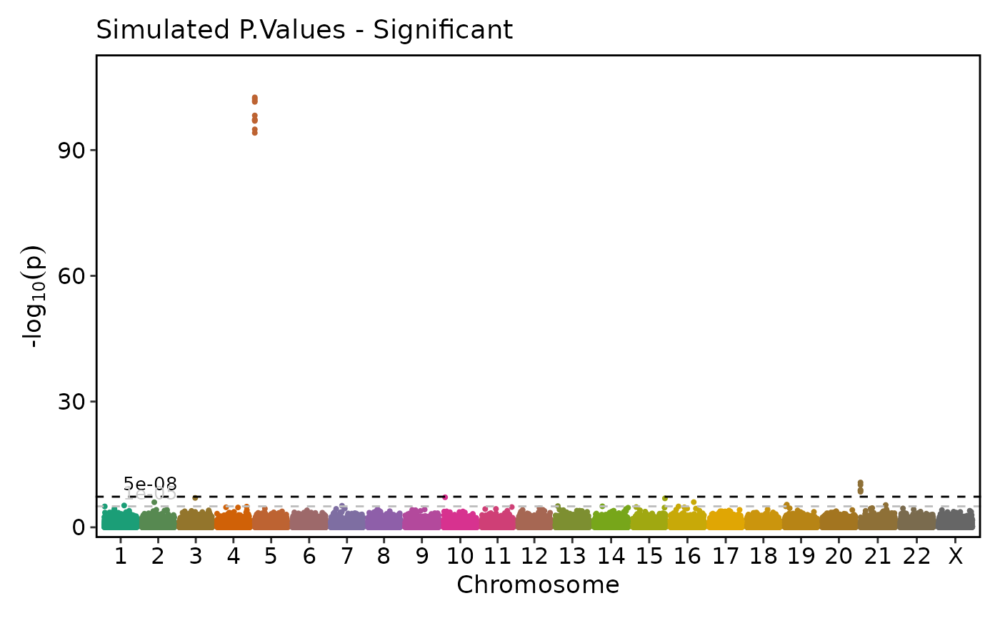
if (requireNamespace("ggmanh", quietly = TRUE)) {
# Rescale the plot (y-axis) and put the breaking point in the middle of the y-axis
ManhattanPlot(
simdata, pval_by = "P.value", chr_by = "chromosome", pos_by = "position",
title = "Simulated P.Values - Significant", rescale = TRUE, signif_rel_pos = 0.5)
}
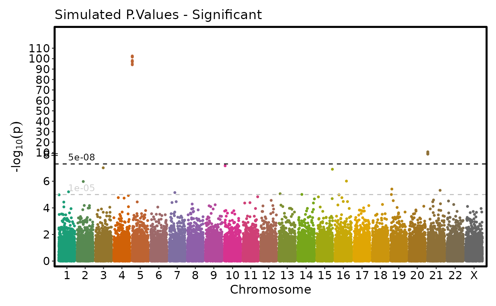
sig <- simdata$P.value < 5e-07
simdata$label <- ""
simdata$label[sig] <- sprintf("Label: %i", 1:sum(sig))
simdata$label2 <- ""
i <- (simdata$chromosome == 5) & (simdata$P.value < 5e-8)
simdata$label2[i] <- paste("Chromosome 5 label", 1:sum(i))
if (requireNamespace("ggmanh", quietly = TRUE)) {
# Label the points with labels
ManhattanPlot(simdata, label_by = "label", pval_by = "P.value", chr_by = "chromosome",
pos_by = "position", title = "Simulated P.Values with labels", label_size = 4)
}
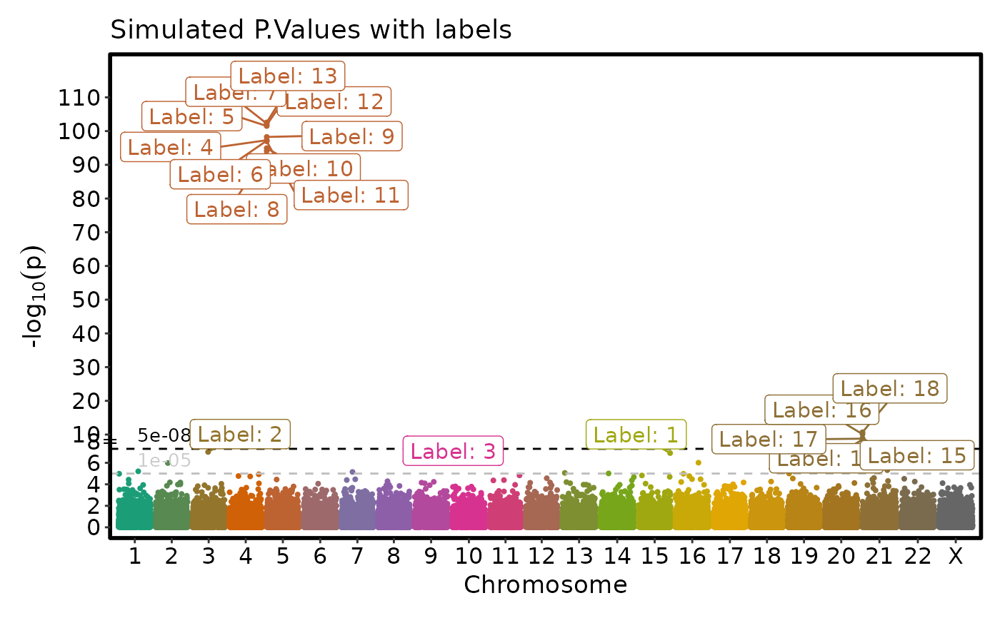
if (requireNamespace("ggmanh", quietly = TRUE)) {
# Label the points with labels and use a different color for the labels
ManhattanPlot(simdata, label_by = "label2", pval_by = "P.value", chr_by = "chromosome",
pos_by = "position", title = "Simulated P.Values with labels",
label_size = 3, label_fg = "black")
}
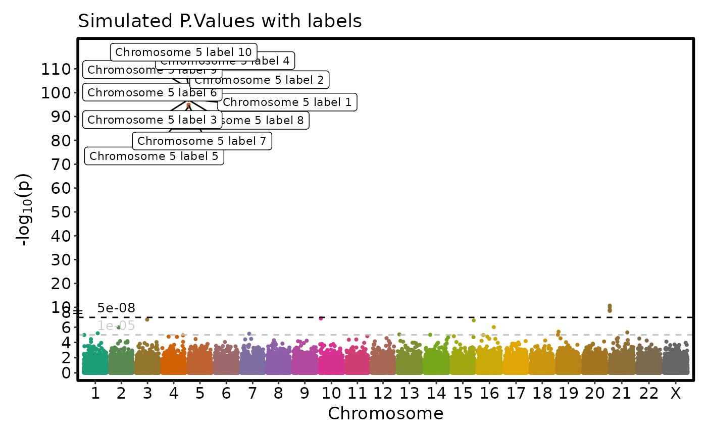
simdata$color <- "Not Significant"
simdata$color[simdata$P.value <= 5e-8] <- "Significant"
if (requireNamespace("ggmanh", quietly = TRUE)) {
# Highlight points with shapes
ManhattanPlot(simdata, title = "Highlight Points with shapes",
pval_by = "P.value", chr_by = "chromosome", pos_by = "position",
highlight = "color == 'Significant'", highlight_color = NULL, highlight_shape = 6,
highlight_size = 5, pt_alpha = 0.2, pt_size = 1)
}
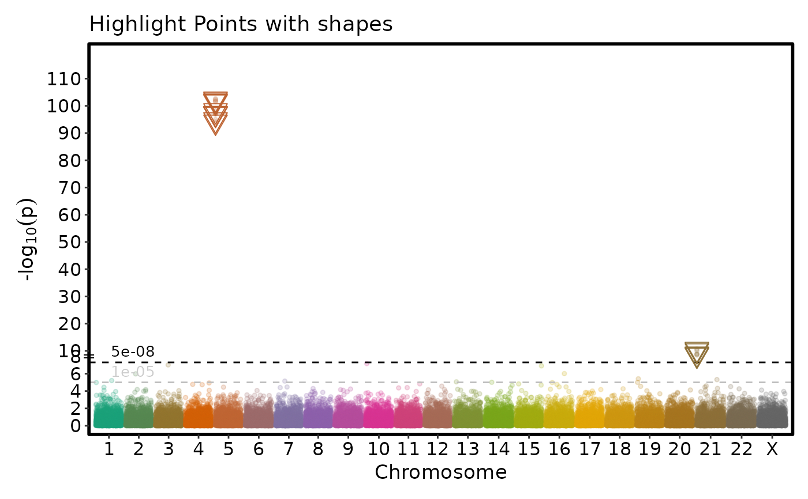
if (requireNamespace("ggmanh", quietly = TRUE)) {
# Highlight points with colors
ManhattanPlot(simdata, title = "Highlight Points",
pval_by = "P.value", chr_by = "chromosome", pos_by = "position",
highlight = "color == 'Significant'", highlight_color = "black",
pt_color = "lightblue", pt_alpha = 0.2, pt_size = 0.1)
}
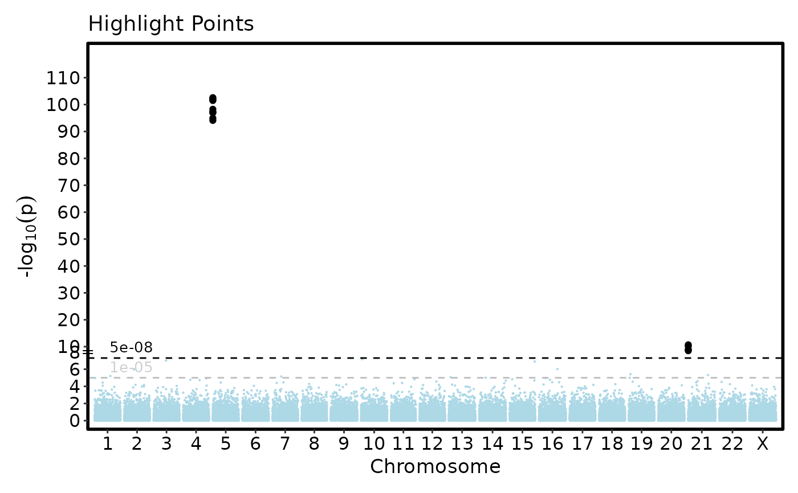
# }